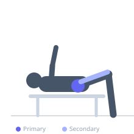
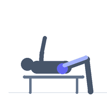

Exercise guide / Pigeon Pose — Loaded (Plate on Hip)
Pigeon Pose — Loaded (Plate on Hip)
A loaded variation of the pigeon pose hip stretch in which a weight plate is placed on the hip of the front leg. The added load deepens the external rotation stretch of the hip joint by applying gentle downward pressure and can help bypass the protective tension reflex that limits passive pigeon pose depth. Used in advanced hip mobility programs and sports-specific flexibility training where passive stretching has reached a plateau.
Primary muscles
gluteus maximus
gluteus medius
Secondary muscles
psoas major
tensor fasciae latae
Equipment
Weight Plates


Starting position
- Begin in a standard pigeon pose: front shin angled across the mat, back leg extended straight behind. The front knee is bent and the hip is in external rotation.
Setup
- Only add weight after the unloaded pigeon pose is well-tolerated. Begin with a 5 kg plate and progress gradually. Place the plate on the hip of the front (externally rotated) leg.
Steps
- Step 1: Establish the pigeon pose with the front shin across the mat, back leg extended.
- Step 2: Once stable, place a weight plate gently on the hip of the front leg.
- Step 3: Hold the loaded position for the prescribed duration, breathing deeply.
- Step 4: Remove the plate before transitioning to the other side.
Coaching cues
- Breathe the hip open — exhale completely and let the hip sink with each breath
- Ensure the plate is resting on the outer hip, not the lower back
- If the stretch feels like joint pain rather than muscle stretch, reduce the load or return to the unloaded version
Breathing
- Deep breathing throughout the hold. Exhale completely on each breath to allow the hip to relax and deepen.
Range of motion
- The same range as the unloaded pigeon pose, potentially slightly deeper due to the gentle additional load.
Tempo
- Hold for 60-120 seconds per side.
Common mistakes
- Using too heavy a load — the plate deepens the stretch, it does not add resistance in the traditional strength training sense
- Placing the plate on the lower back rather than the hip
- Using the loaded variation before the bodyweight version is fully tolerated
Safety
- If sharp hip or knee pain occurs, remove the plate immediately
- Avoid if you have an acute hip labral tear — loading may increase pain
Training
- mobility: 1–2 reps
- mobility: 1–2 sets
- Rest: {'mobility': 30}